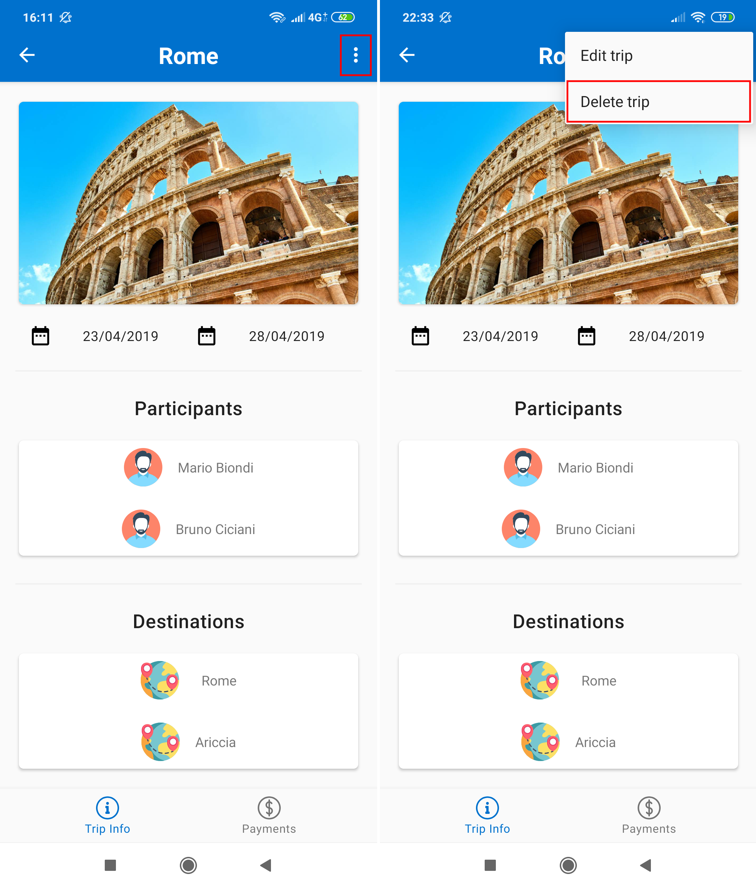
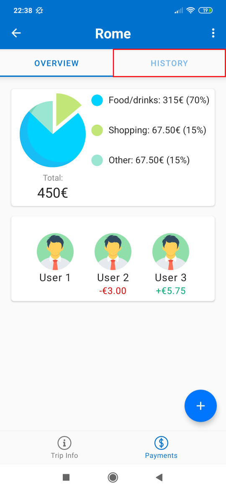
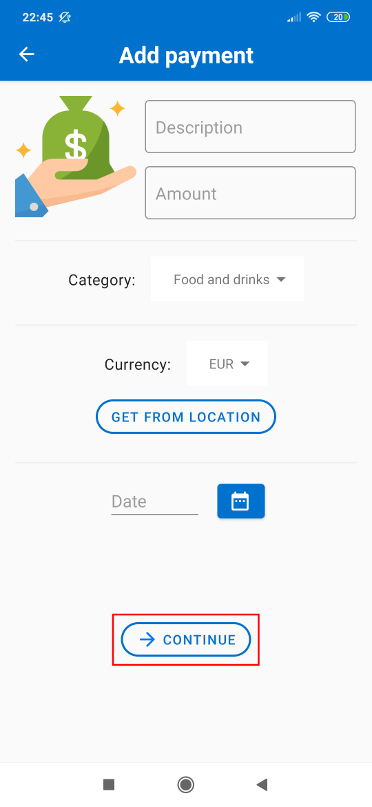
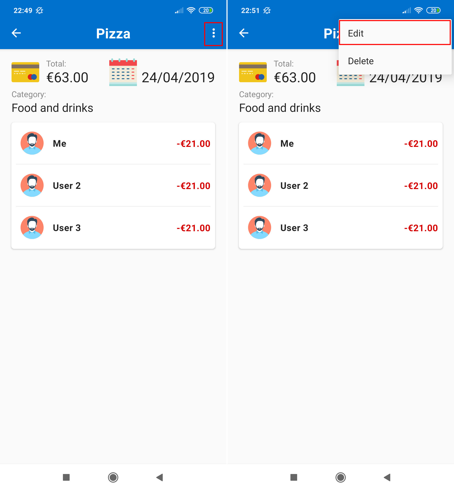

Overview
The main idea of myTravel is to provide to travelers an intuitive and easy-to-use application to let them to keep track of all the payments done during a trip, in order to always be up to date with their budget. In particular, it can be used alone or in group, and in this latter case myTravel offers the possibility to split some payments among the participants so that anyone can get rid of keeping bills with each other.
myTravel will be useful for:
- Alone Holiday Traveler, which accounts all his/her spendings into the app in order to have an idea of his/her balance
- Group Holiday Travelers, which want to split some payments among the participants
- Business Travelers, which want to distinguish between personal spendings and business ones which have to be refund by the company
Get started
The main page of the application is composed by 3 tabs, which can be navigated by means of the lower Navigation Bar:
- Home: where you find the most important shortcuts for searching tickets and accomodations, for the currency conversion tool and finally for the last trip you have added;

- My trips: where you find all the trips you have added to the application so far;

- Profile: where you can find your information such as your username, your email, your profile picture etc...

Moreover, an hidden side menu is always present, which other than the shortcut just mentioned, it also contains a quick logout button, an help button which brings you to this documentation and a contact us button which allows you to directly contact the developers via email.

Your profile
The profile page of the app, which is reacheable by the right-most tab of the main page, shows the informations about you that are relevant for the app. You will find the email and the username that identify you (which cannot be changed), your profile picture, your preferred currency and a form where you can change your current password (if you registered via email).
- In order to change the currency, it is sufficient to tap on the Dropdown menu and choose the currency.
- In order to change the profile picture, it is sufficient to tap on the profile picture and the choose a new one from the gallery.
Note: the password exists (and thus can be changed) only if the user signed up via email. In order to change the password, you firstly have to type the current (old) one in the proper field, and then the new one. Finally you have to re-type the new one and press the change button button.
Add a trip
Note: all the informations you will insert about a trip can be changed at any time.
Adding a trip is quite simple. Either you click on the Add a trip button in the homepage or you click the floating button in My trips page. You will be presented with the following page:

Then, with the Choose picture button you can choose a picture for the trip, then you can insert the name of the trip in the Trip name text field, and departure and return dates by simple clicking to the calendar button and choosing the date from the google calendar that blows up. Then you can start choosing the participants of the trip, by just searching them in the Add participants section, typing their Usernames. Finally, you can optionally add the destinations your trip will be composed of and a simple text note useful for remember something. Once you have done, tap on CREATE TRIP button.
Edit a trip
As already said in the Add a Trip section, you can always edit trip informations. Go to My trips tab of the homepage, and then tap on the trip you want to modify. You will get a page like the following:

Tap on the 3 dots on the top-right corner and select Edit.
Now you are on a page very similar to the one when you add a trip:

Once you get to the Edit trip page, you can edit each field in the same way you compiled it when you added the trip.
Once you have done, tap the apply changes button at the bottom of the page:
Delete a trip
In order to delete a trip, go to My trips tab of the homepage and tap to the target trip.
Once you are in the Trip Page, tap on the 3 dots on the top-right and then tap Delete.

A pop-up will appear, asking you a confirmation for deleting the trip, tap on the red delete button and you are done:

Trip payments overview
When on a Trip Page, you can see there are two tabs in the bottom navigation bar, and they are Trip info and Payments. If you tap on Payments:

you will reach the payments tab:

The Payments tab is composed by two sections: Overview and History.
You are now in the Overview section, where you can find a diagram showing how much you spent for that trip so far. Then you find the list of participants of the trip, and for each of them, if you owe to him a certain amout, a corresponding red amount is displayed below him, while if he owe to you a certain amount, a corresponding green amount is displayed below him.
Trip payments history
Once you tap the Payments tab of the bottom navigation bar of a trip page, you will get to the payments overview section. On the top there is a navigation bar allowing you to change section and so to view the History section:

You will get to a page listing all the payments you have done for that trip:

Each payment in the list is displayed in terms of an icon, a name and an amout. If the icon represents a single guy it means that that payment was a personal payment (the other participants will never be able to see it in their app), if the icon represents a group it means that that payment is associated to a group payment and the amount is only your contribution.
Add a payment
In order to add a payment, go to the Payments tab of a Trip Page and go to the Overview section. You will see a floating button on the bottom-left of the page. Tap on it and select Add new payment:
Then, insert the description (e.g. domò sushi), the amout, the currency, and the date, then tap the continue button:

Finally, you will get to a page where it is displayed the list of participants of the trip the current payments belongs to. If the payment you are adding is a personal payment, just select yourself (selected by default), otherwise if it is a group payment tap the checkbox near each user that will be a participant of that payment, the amount splitting will be done automatically and shown near each user you select. In order to select all the participants in a single tap, check the Select all checkbox, in order to cancel all the selections, tap the Reset button.
Once you have chosen all the participants, tap the done button:

Pay off a debt
If you want to get rid of a debt, go to the Payments tab of a Trip Page and go to the Overview section. You will see a floating button on the bottom-left of the page. Tap on it and select Pay off debt:
You get into the following page:

on the right of the arrow, you can select the participant that will receive the amount of money, while below the arrow you can select the amount. Below the amount, it will be displayed the remaining debt you still owe to that participant if any, in particular:
- If you pay an amount higher than the debt, then the other participant will owe to you the remainder
- If you pay the exact amount of the debt, the debt will be fixed
- If you pay an amount lower than the debt, then you will still owe to that participant the remainder
Once you have chosen the amount, tap on Pay to let the app to do the computation and to update the payments overview of the trip.
Payment page
You can always return to a payment that has been done for a trip in order to view its details. Go to the History section of the Payments tab of a trip page.
A list of all the payments of the trip will appear, tap to the target one.
You will get to a page where a payment recap is show, in terms of description, total amout, date of payment and a list of participants for that payment, togheter with the amount payed by each one:
Edit/Delete a payment
You can always return to a payment that has been done for a trip in order to edit its details (e.g. the amount, the participants and so on). In order to edit it, just go to the payment page, you will see a pencil icon on the top right, tap on it:

Now it will be displayed a page identical to the one when you add a payment, so as you inserted the fields of that payment in the same way you can edit them. A for the Add payment steps, you have to tap on the continue button and finally, in the last page, on the done button.
If you instead want to delete a payment, it is sufficient, in the Edit payment page, to tap on the trash icon on the top right, and tap on the red delete button in the dialog that pops up: